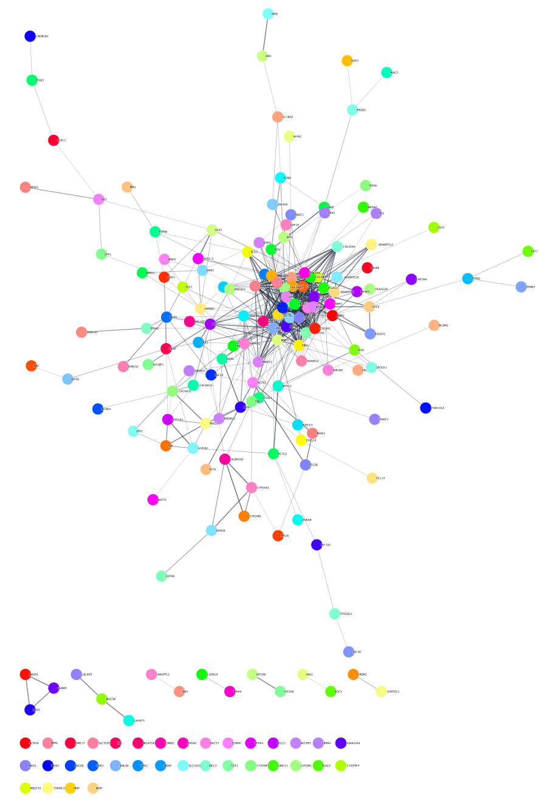
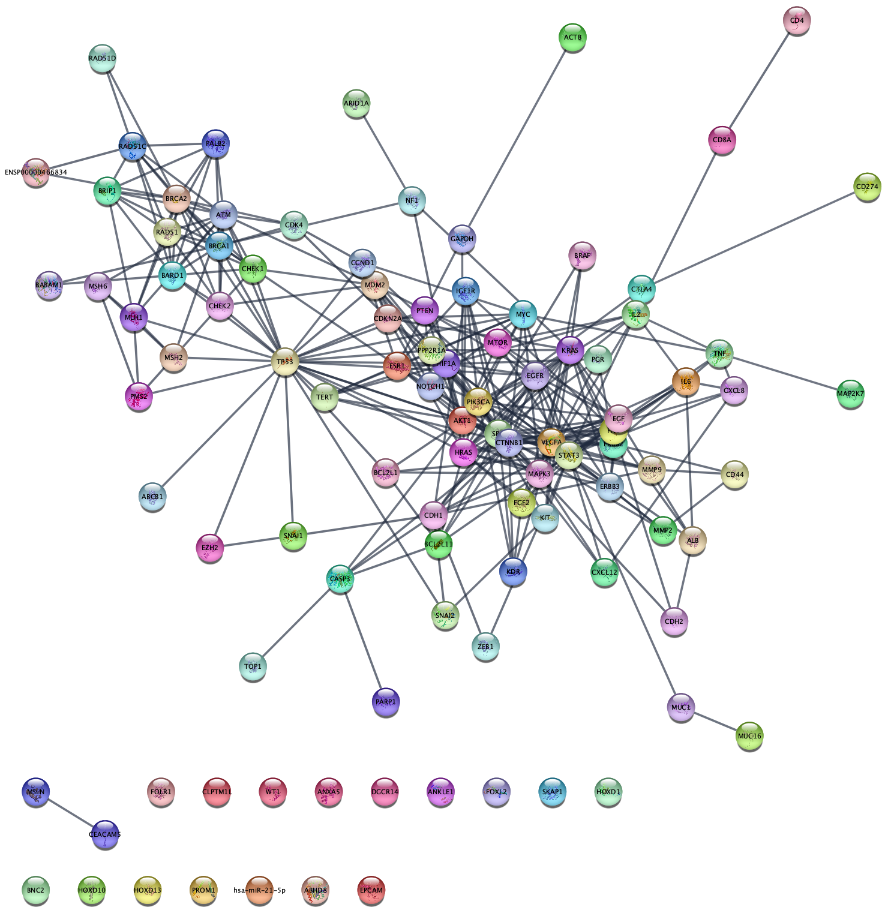
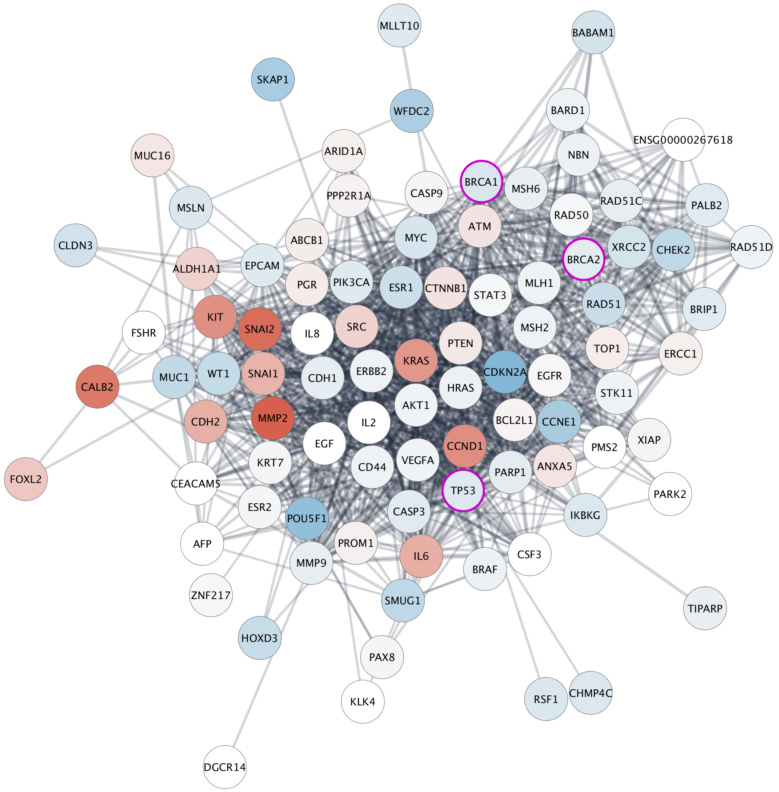

Differentially Expressed Genes Network Analysis
This protocol describes a network analysis workflow in Cytoscape for a set of differentially expressed genes. Points covered:
- Retrieving relevant networks from public databases
- Network functional enrichment analysis
- Integration and visualization of experimental data
- Exporting network visualizations

Background
Ovarian serous cystadenocarcinoma is a type of epithelial ovarian cancer which accounts for ~90% of all ovarian cancers. The data used in this protocol are from The Cancer Genome Atlas, in which multiple subtypes of serous cystadenocarcinoma were identified and characterized by mRNA expression.
We will focus on the differential gene expression between two subtypes:
Mesenchymal and Immunoreactive.
For convenience, the data has already been analyzed and pre-filtered, using log fold change value and adjusted p-value.
Network Retrieval
Many public databases and multiple Cytoscape apps allow you to retrieve a network or pathway relevant to your data. For this workflow, we will use the STRING app. Some other options include:
Retrieve Networks from STRING
To identify a relevant network, we will use the STRING database in two different ways:
- Query
STRING protein with the list of differentially expressed genes. - Query
STRING disease for a keyword; ovarian cancer.
The two examples are split into two separate workflows on the following slides.
If you don't already have the stringApp installed, you can install it from the Cytoscape App Store or from Cytoscape via
Example 1: STRING Protein Query
Up-regulated Genes
- Open the file containing the list of up-regulated genes, TCGA-Ovarian-MesenvsImmuno-data-up.csv, and copy the contents to the clipboard.
- In the
Network Search bar at the top of theNetwork Panel , selectSTRING protein query from the drop-down, and paste in the list of up-regulated genes. - Open the options panel
 and confirm you are searching Homo sapiens with a cutoff of 0.4 and 0 maximum additional interactors.
and confirm you are searching Homo sapiens with a cutoff of 0.4 and 0 maximum additional interactors. - Click the search icon
 to search. The resulting network will load automatically.
to search. The resulting network will load automatically.
STRING Network Up-regulated genes
The resulting network contains up-regulated genes recognized by STRING, and interactions between them with an evidence score of 0.4 or greater.
STRING Network Up-regulated genes
The networks consists of one large connected component, several smaller networks, and some unconnected nodes. We will use only the largest connected component for the rest of the tutorial.
- Using Shift-drag, select all nodes and edges for the largest connected component.
- Select
File → New Network → From Selected Nodes, Selected Edges .
Data Integration
Next we will import log fold changes and p-values from our TCGA dataset and use them to create a visualization. Since the STRING network is a protein-protein network, it is annotated with protein identifiers, namely Uniprot and Ensembl protein. Our data from TCGA has NCBI Gene identifiers (formerly Entrez), so before importing the data we are going to use the ID Mapper functionality in Cytoscape to map the network to NCBI Gene.
- In the
Node Table , right-click on the column header of thecanonical name column and clickMap column... . - In the
ID Mapping interface, select Human asSpecies , Uniprot asMap from and Entrez asTo . Click OK to continue. - IDMapper displays a report of how many identifiers were mapped. Make note of this information as it impacts all downstream analysis; If the mapping was unsuccessful, downstream analysis will be as well.
Data Integration
We can now import the differential gene expression data.
- Download a local copy of TCGA-Ovarian-MesenvsImmuno_data.csv.
- Load the TCGA-Ovarian-MesenvsImmuno_data.csv file under
File menu, selectImport → Table from File.... - Make sure you select the new Entrez Gene column as the Key column for Network to match the correct column with the key column of the data.
- To complete the import, click
OK . Two new columns of data will be added to theNode Table .
Visualization
Next, we will create a visualization of the imported data on the network. For more detailed information about how to create visualizations, see the Visualizing Data tutorial.
- In the
Style tab of theControl Panel , switch the style from STRING style v1.5 to default in the drop-down at the top. - Change the default node shape to ellipse and check Lock node width and height.
- Set the default node fill color to light gray.
- Set the default
Border Width to 2, and make the defaultBorder Paint dark gray. - For node
Fill Color , create a continuous mapping forlogFC , with the default ColorBrewer yellow-orange-red shades gradient. - Finally, for
Node Label , set a passthrough mapping fordisplay name .
Visualization
Applying a

STRING Enrichment
The STRING app has built-in enrichment analysis functionality, which includes enrichment for GO Process, GO Component, GO Function, InterPro, KEGG Pathways, and PFAM.
- In the STRING tab of the
Results Panel , click theFunctional Enrichment button. Keep the default settings. - When the enrichment analysis is complete, a new tab titled
STRING Enrichment will open in theTable Panel .
STRING Enrichment
The STRING app includes several options for filtering and displaying the enrichment results. The features are all available at the top of the
- At the top left of the STRING enrichment tab, click the filter icon
 . Select
. Select GO Process and check theRemove redundant terms check-box. Then click OK. - Next, we will add a split donut chart to the nodes representing the top terms by clicking on
 .
. - Explore custom setting via
 in the top right of the STRING enrichment tab.
in the top right of the STRING enrichment tab.
STRING Protein Query Down-regulated Genes
The same workflow (network search, data integration, visualizationcan and enrichment analysis) can be repeated for the set of down-regulated genes.
- Query STRING protein with the list of symbols in TCGA-Ovarian-MesenvsImmuno-data-down.csv.
- Create a subnetwork for the largest connected component, then map Uniprot identifiers to NCBI gene and load the data.
- Create a visualization as described previously. To distinguish between the visualizations of up- and down-regulated results, pick a different node fill color palette, for example ColorBrewer yellow-green shades.
STRING Protein Query Down-regulated Genes
- Perform STRING Enrichment analysis on the resulting network. Filter for non-redundant GO Process terms.
- For this use case, we can try a different enrichment chart. Click the
Settings button in the enrichment resluts panel and change the chart type toPie Chart withNumber of terms to chart set to 3. - As you see, we now have both the enrichment results pie chart and the node color mapping visible on the nodes. Remove the node color mapping to see just the enrichment results:
Example 2: STRING Disease Query
So far, we queried the STRING database with a set of genes we knew were differentially expressed. Next, we will query the STRING disease database to retrieve a network genes assocuated with ovarian cancer, which will be completely independent of our dataset.
- In the
Network Search bar at the top of theNetwork Panel , selectSTRING disease query from the drop-down, and type in ovarian cancer. - Open the options panel and change the confidence score cutoff to 0.95.
- Click enter, or the search icon, to search.
This will bring in the top 100 ovarian cancer associated genes connected with a confidence score greater than 0.95.
Data Integration
Next we will import differential gene expression data from our TCGA dataset to create a visualization. Just like the previous example, we will need to do some identifier mapping to match the data to the network.
- First, lets focus on the largest connected subset by either deleting the unconnected nodes, or creating a subnetwork of the largest connected component.
- In the
Node Table , right-click on the column header of thecanonical name column and clickMap column... . - In the
ID Mapping interface, select Human asSpecies , Uniprot asMap from and Entrez asTo . Click OK to continue. - A notification will let you know how many of the nodes were successfully mapped. A new column (all the way to the right) with NCBI Gene identifiers will be added to the
Node Table . - IDMapper displays a report of how many identifiers were mapped. Make note of this information as it impacts all down-stream analysis; If the mapping was unsuccessful, downstream analysis will be as well.
Data Integration
- Next, we can load the data. Download a local copy of TCGA-Ovarian-MesenvsImmuno_data.csv. Then go to
File → Import → Table from File... and select the data file. - Load the TCGA-Ovarian-MesenvsImmuno_data.csv file under
File menu, selectImport → Table from File.... - Make sure you select the new Entrez Gene column as the Key column for Network to match the correct column with the key column of the data.
- To complete the import, click
OK . Two new columns of data will be added to theNode Table .
Visualization
Next, we will create a visualization of the imported data on the network. For more detailed information about how to create visualizations, see the Visualizing Data tutorial.
- In the
Style tab of theControl Panel , switch the style from STRING style v1.5 to default in the drop-down at the top. - Change the default node shape to ellipse and check Lock node width and height.
- Set the default node fill color to light gray.
- Set the default
Border Width to 2, and make the defaultBorder Paint dark gray. - For node
Fill Color , create a continuous mapping forlogFC , with the default ColorBrewer red-blue gradient. - Finally, for
Node Label , set a passthrough mapping fordisplay name .
Visualization
Applying the
Visualization: Cancer Drivers
The TCGA found several genes that were commonly mutated in ovarian cancer, so called "cancer drivers". We can add information about these genes to the network visualization, by changing the visual style of these nodes. Three of the most important drivers are TP53, BRCA1 and BRCA2. We will add a thicker, clored border for these genes in the network.
- Select all three driver genes by holding down the Command key while clicking each of the genes.
- In the
Style panel, add a style bypass for nodeBorder Width (7) and nodeBorder Paint (bright pink for example). You can create a style bypass by clicking theBypass (Byp.) column for each attribute.
Visualization: Cancer Drivers
The network will now look something like this:
Other Analysis Options
- Exploring networks: finding paths, hubs and modules (clusterMaker, MCODE, jActiveModules, NetworkAnalyzer)
- Extending networks with Transcription Factors, miRNAs, etc using CyTargetLinker
Exporting Networks
Cytoscape provides a number of ways to export results and visualizations:
- As an image:
File → Export → Network to Image... - To a public repository:
File → Export → Network to NDEx , orFile → Export → Collection to NDEx - As a Cytoscape JSON file:
File → Export → Network to File and select Cytoscape.js JSON as the format.